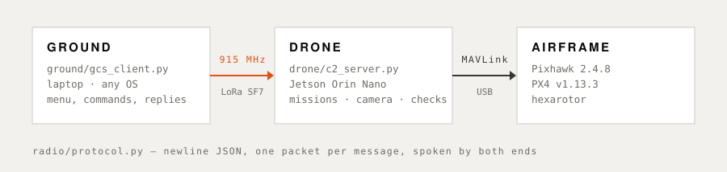

Secure, long-range, off-grid autonomous flight drone platforms powered by edge compute.
PX4 v1.13.3 · Jetson Orin Nano · Heltec Wireless Stick V3 · LoRa C2
These animations show the system as designed. The protocol, the two-step arm gate, the link-loss failsafe and the waypoint upload are built and bench-tested; outdoor flight is pending, and anything marked not built is exactly that. Each caption says which is which.
Concept of operations
A command leaves the ground station over 915 MHz LoRa, the Jetson relays it to the flight controller over MAVLink, the aircraft follows a person at 3 m — and when the link drops for more than four seconds, it returns to launch without being told.

Waypoint patrol
Four coordinates go up one LoRa packet at a time, each acknowledged. The Jetson validates them, builds a PX4 mission and waits for a second confirmation before anything spins. Return-to-launch is the mission's own last item, not a failsafe.

Off-grid messaging
LoRa is a broadcast medium, so a message sent from the field reaches the ground station and the aircraft at the same instant. Phones are never on the air — they load a page from the machine holding the radio.

Architecture
No QGroundControl, no GUI, no internet — a laptop, a radio and a drone.
